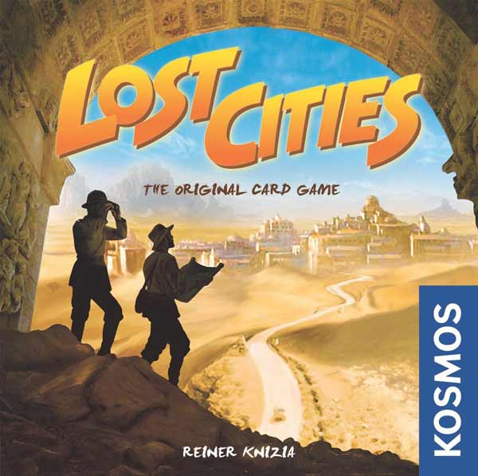
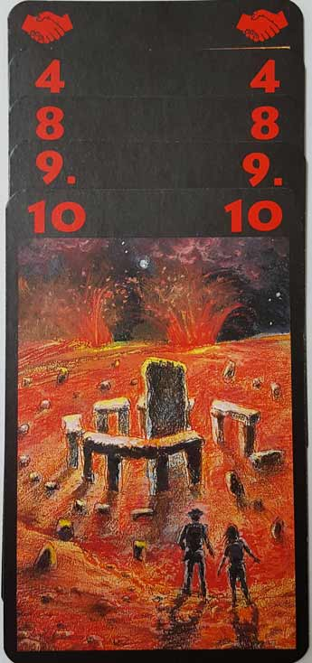
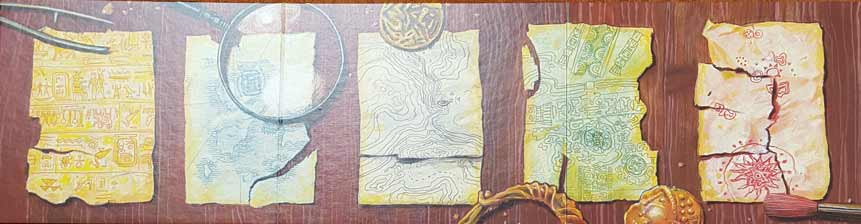
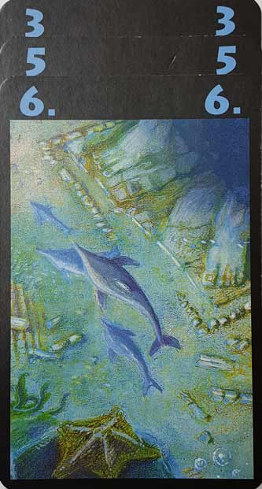
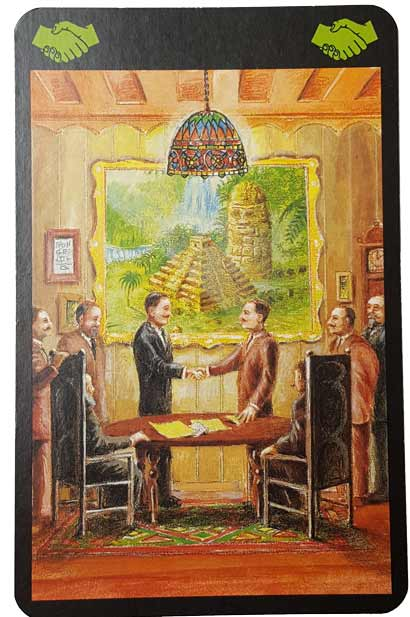
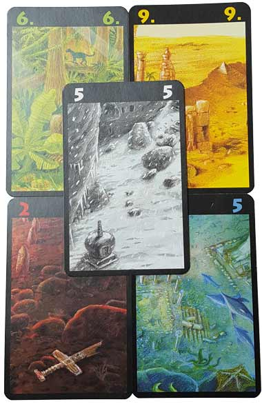

In this Lost Cities review, D and Will share their thoughts on the classic card game from designer Reiner Knizia and publisher KOSMOS. In this game, players take on the roles of archaeologists who are preparing several expeditions to various historical sites. These expeditions are quite costly, so players will have to negotiate handshake deals and carefully strategize in order to turn a profit. In truth, all they have to do is play numbered cards and remember to utilize some multipliers. But hey, the theme is cool too. For more on Lost Cities, continue reading below.

D reviews Lost Cities
 (Author’s
note: this review is meant to accompany our gameplay video and will not
go in-depth on the game’s rules. If you’re interested in learning how
the game is played, please watch the video. It’s not bad.)
(Author’s
note: this review is meant to accompany our gameplay video and will not
go in-depth on the game’s rules. If you’re interested in learning how
the game is played, please watch the video. It’s not bad.)
While Lost Cities is already one of the oldest games we’ve played so far for Board Crazy, I’d say it feels even older than its 1999 original release date. And I don’t mean that to be an insult. There is a really classic, timeless feeling to it that’s difficult to find in most modern tabletop games. The simplicity of it certainly plays a large part in that feeling. I’m not sure if “Color and Number games” is a genre or not, but I’m starting to think it should be. Uno is probably the best known game of this type, but other games we’ve played like Hanabi and even Senshi could reasonably fit under this banner as well. All of these games are affordable, simple, and short, with little-to-no use of theme. And of course, they all rely on the manipulation of colors and numbers to drive their gameplay. Naturally, some of these games are more successful than others, but I personally think there’s always something admirable about a game that can provide a new, basic experience in an arena as overcrowded as board games. It’s like a guitarist discovering some basic, three-note riff that somehow no one has ever played before. And I think that Lost Cities is a pretty solid riff.
The game is actually so remarkably uncomplicated that there isn’t too much to analyze. As I alluded to previously, the theme of Lost Cities is almost non-existent. The period expedition theme is there entirely to make the game look more interesting, and the art is good enough. Likewise, the game’s few components are perfectly adequate. The rulebook is just two, double-sided pages that tells you everything you need to know as clearly as you’d hope. And the rules don’t really need any interpreting anyway. You play a card, then you draw a card – Rinse and repeat. The most complicated part of the experience is the bit of math that needs to be done at the end of each round to tally up the scores. But the game works because that simple gameplay loop is reasonably satisfying. There’s just enough to keep track of that you do need to form a legitimate strategy, and a misstep might cost you a lot of points (see the end of round one in the video). The game plays fast; once both players are in a rhythm, there is basically no downtime, and you’ll probably find yourself occasionally surprised that it’s already your turn again. And drawing the exact card that you need off the top of the deck is the sort of uncommon-yet-satisfying occurrence that a game like this needs to keep its players happy.
I do have a couple of issues with the game, of course. In a recent review for The Fox in the Forest, I bemoaned what I interpret to be a lack of good, new board games designed specifically for two players. And while Lost Cities is a good game designed only for two players, in this case I’m not sure that limiting it to two was actually necessary. The card count might make a game with a higher player count really short, but I think it might also make things more interesting as well. The game has a bit of an issue with luck, and with two players it’s not unlikely for one player to have much better luck than the other, at least over two of the three rounds. An extra player or two would probably negate this issue a bit, in addition to really forcing the players to be smart with their handshake cards or risk major point losses. Who knows, maybe we’ll do a House Ruled.
I like Lost Cities well enough, but this is not going to be everyone’s bag, and you probably don’t need me to tell you if you’re going to like it. Watch us play it for just one round and you’ll probably have an idea if this game is for you or if it’s not. There’s not much to it, but it’s a good family game. It might make a good gift for people who aren’t enthusiasts and typically favor the more common games found in department stores. A mild recommendation.
D’s Rating: Three Stars out of Five.
Will reviews Lost Cities
 As
D and I delved down into the tomb, we found a sarcophagus filled with
rare gems and then we… … Oh wait, none of that happened, at least not in
Lost Cities, the 2-player card game from KOSMOS. First of all, Lost Cities
is a competitive game, so D and I wouldn’t be working together. And
secondly, despite the game’s art and theme, there’s virtually no
adventure to be found in it. Really, all you do in this one is play
colored cards in ascending order (with a few multipliers) in order to
attain the highest score over a handful of rounds. It’s simple, it’s
enjoyable, and it’s kind of underwhelming.
As
D and I delved down into the tomb, we found a sarcophagus filled with
rare gems and then we… … Oh wait, none of that happened, at least not in
Lost Cities, the 2-player card game from KOSMOS. First of all, Lost Cities
is a competitive game, so D and I wouldn’t be working together. And
secondly, despite the game’s art and theme, there’s virtually no
adventure to be found in it. Really, all you do in this one is play
colored cards in ascending order (with a few multipliers) in order to
attain the highest score over a handful of rounds. It’s simple, it’s
enjoyable, and it’s kind of underwhelming.
To many board gamers, designer Reiner Knizia is a legend, and to me, that opinion is justified. So many of his games are entertaining, nuanced, and balanced, though they have a reputation for lacking theme. Not that that’s too big of a deal – theme is definitely important, but it’s not that important. At the same time though, if you slap a fun theme onto a set of rules, you should at least try to incorporate it in a few ways. After all, art style and theme are often what attracts buyers to a game in the first place. Indeed, Lost Cities has a theme, but you’ll need a magnifying glass to notice it.
Look, I came into this game with no illusions that some Indiana Jones-esque experience could be had. No, I knew that Lost Cities was an easygoing card game, and I knew Knizia’s reputation in regards to theme. Yet, even knowing these things, I was still shocked at how little the adventure theme was used. In fact, I could only notice it within one rule, in which you lose 20 points if you begin an “expedition” (column of cards). Thematically, this makes sense since in reality, archaeological or treasure-hunting expeditions cost quite a lot to get up and running. Other than that, I can’t think of one other instance where the adventure theme was utilized, and that’s disappointing.
Despite all of that, the gameplay itself is definitely quick and entertaining. It’s very, very simple, but it’s also quite refined. Playing Lost Cities, I began to realize how many other card games have used elements of it in their gameplay. And then I realized – Lost Cities is a really important game. That fact definitely makes me appreciate it more, and heck, I always appreciate games that are short, sweet, and don’t try to be more than they should be. When it comes to that last part, I’ve always found Knizia’s games to fall into that category. Lost Cities is no different.
However, I did pick up on a couple things that might annoy some gamers during what is otherwise an enjoyable gameplay experience. For one, the endgame (and end of round) scoring involves a lot of math, so much so that I recommend having a calculator handy. Lost Cities requires that you do addition, multiplication, and subtraction, and the scores can get really high. Though, I sort of like the scoring system and how unpolished it kind of is, as it really hearkens back to the era in which this game was first published (1999). Second, Lost Cities can often become rather lopsided, which is especially noticeable in a 2-player format. It’s so easy for someone to draw the majority of the “handshake” cards (multipliers) and balloon their score to absurd levels. In other words, good or bad luck is something to contend with in this game. But I wouldn’t let that get to you, as Lost Cities is really brief and meant to be played over and over again.
All things considered, I do like this game, but I definitely don’t love it. Then again, I get the feeling that Knizia didn’t design this game to be anyone’s personal favorite. It’s so simple and easygoing that I don’t see how it could be, but I do see how it could feature on someone’s table quite frequently. Lost Cities is a breezy, family card game with few mechanics and even less theme. Most people will like it; few will love it. There’s a lot of math and a good helping of luck, but there’s also strategy and something else I adore, the ability to mess with your opponent. I’m not dying to play it again, but if it happens to come up, I won’t complain.
I give Lost Cities a: B-
Leave a Reply
You must be logged in to post a comment.